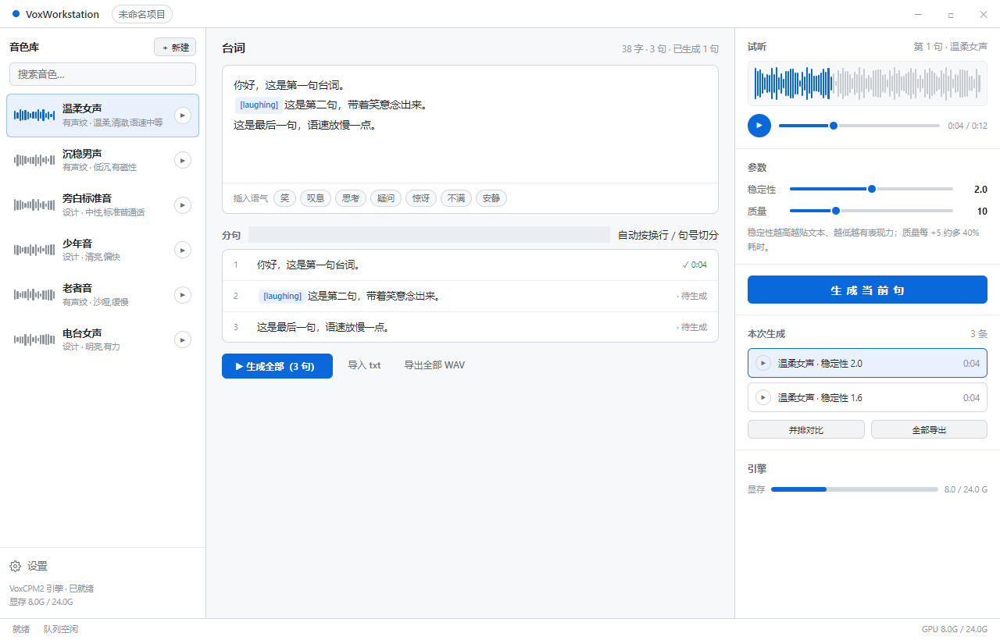
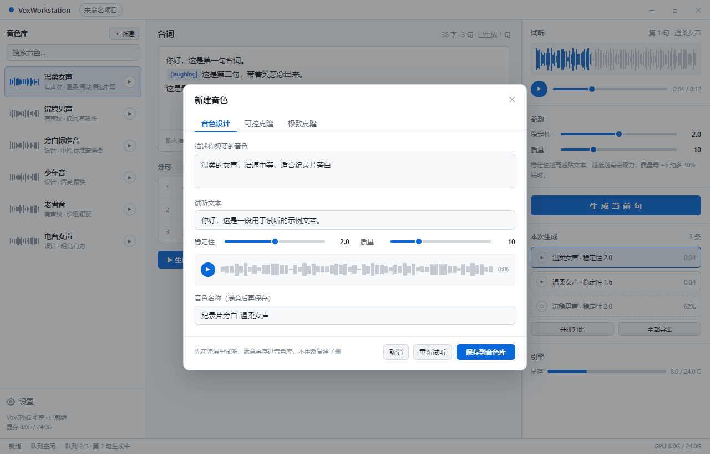
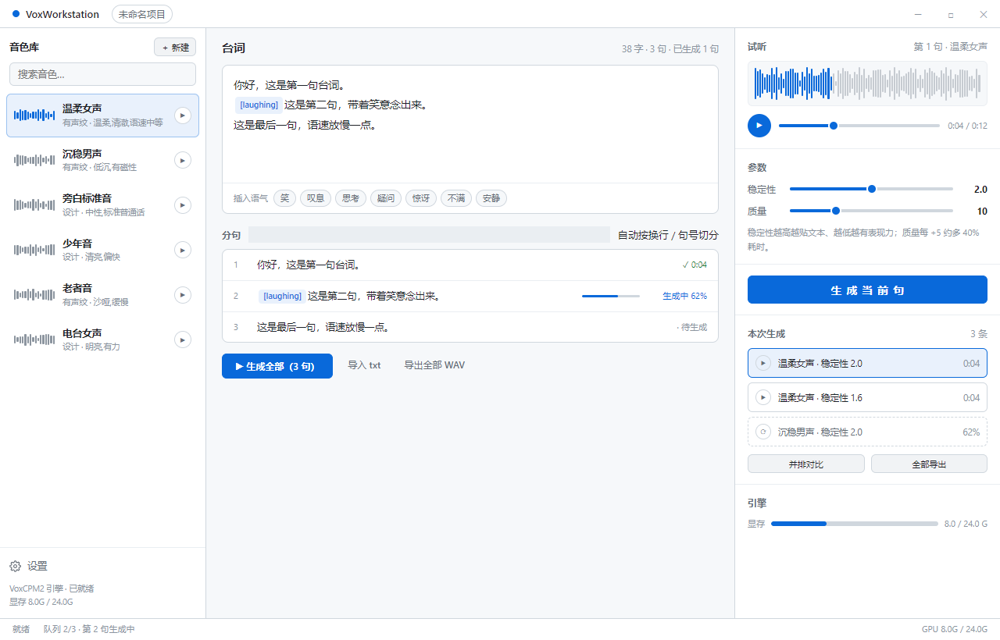

布局应该由模型的物理约束决定，而不是由"我们有哪几个接口"决定。VoxCPM2 有五条硬约束：
/api/generate/batch，但现有 UI 完全没暴露。现在把 配音 / 音色库 / 克隆源 / 音乐 / 设置 五个模块做成平级导航，这是 按数据表分类，不是按工作流分类。用户真实的动作顺序是 选音色 → 写台词 → 生成试听，而这三件事被拆在三个平级页面里来回跳。
骨架 = 音色 | 台词 | 试听 三栏。左中右分别回答：用什么声音 / 说什么 / 出来什么。

1. 音色库常驻左栏，不再是二级页面。每个音色带一条波形缩略图和独立试听按钮， 不用点进去就能听。底部署名该音色是"有声纹"还是"设计"来的。
2. 台词按句组织，直接吃后端已有的 batch 能力。文本框下面自动分句，
每句有独立状态（✓ 0:04 / 生成中 62% / · 待生成），
可以单句重生成，也可以"生成全部"。语气标记 [laughing] 在文本里高亮成 chip，
在分句列表里同样可见 —— 不再是一串需要背下来的魔法字符串。
3. 右侧是"试听台"而不是"参数面板"。核心是本次生成列表： 同一句话的多个版本并排躺着，可以逐条试听、并排对比、挑一条导出。 这才是调参时真正需要的界面。

现在必须先存进音色库才能听到效果，不满意就删掉再建 —— 这个循环很折磨人。 弹层里直接给试听结果和"重新试听"，名字最后才填。

GPU 串行的现实下，"生成中"必须是一个有进度、可离开、可继续编辑其他句的状态，
而不是锁死整个界面。状态栏同步显示 队列 2/3 · 第 2 句生成中。
| 现有功能 | 原位置 | 新位置 |
|---|---|---|
| 配音（单句生成） | 顶部导航「配音」 | 中间主区 —— 升格为默认工作区，且扩成多句 |
| 音色库（增删改查） | 顶部导航「音色库」 | 左栏常驻，加波形缩略图与行内试听 |
| 克隆源（设计/克隆/极致） | 顶部导航「克隆源」三个 Tab | 左栏「＋新建」弹层，三个 Tab 保留，加先试听后保存 |
| 生成参数（稳定性/质量） | 右栏裸滑块 | 右栏，加效果说明（越高越贴文本 / 每 +5 约多 40% 耗时） |
| 语气标记 | 文本框右下角小 chips | 独立工具条 + 文本内高亮 + 分句列表可见 |
| 生成历史 | 右栏列表（10 条上限） | 拆成「本次生成」（A/B 对比用）与项目级历史 |
| GPU 显存 | 状态栏文字 | 状态栏 + 右栏底部进度条，接近上限变色 |
| 音乐生成 | 顶部导航「音乐」（纯占位，按钮永远是灰的） | 移出主导航，降级为设置里的实验功能 |
| 设置 | 顶部导航「设置」 | 左下角（与引擎状态同区） |
后端 server.py 里没有任何音乐相关接口，
这个模块的按钮从第一天起就是 disabled 的。占一个和「配音」平级的一级入口，
会让整个导航显得不可信。先收起来，接上了再放出来。
这是提案，没有动 renderer/ 里的代码。当前应用跑的是上一轮的
「左侧文字侧边栏 + 明亮现代 / 黑白水墨双主题」。
要落地的话，改动集中在：index.html 的骨架、dub.js 拆成
voices.js（左栏）/ script.js（中栏）/ takes.js（右栏），
以及新增 voice-create.js（弹层）。后端除了把 batch 接口接上，其余不用动。